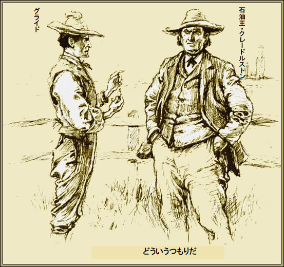
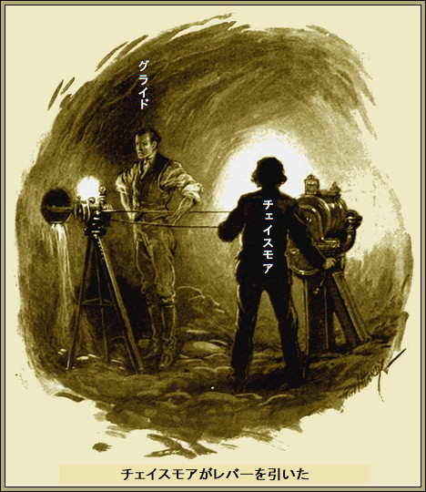
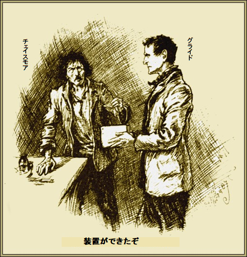
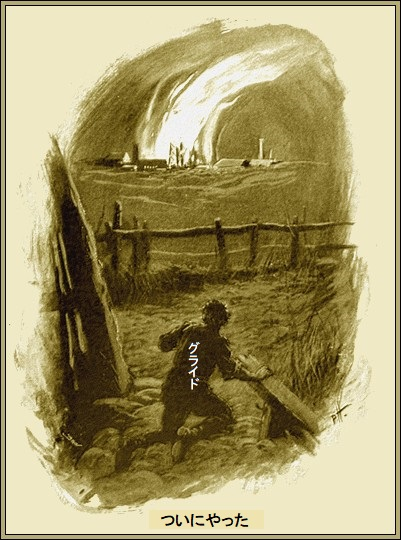

第一章
グライドが相棒をしげしげ
相手のフランク・チェイスモアは、かつて美男子だったに違いないが、後年大事故に会って、乾燥クルミみたいな傷跡が残り、視力も失っていた。
グライドが慎重に言った。
「君の発明品を購入しようと思うんだが」
相棒のチェイスモアは苦笑い。
文字通り、ニューヨークの貧民街で、この変人技術屋をグライドが拾った。グライドの計画は
技術屋のチェイスモアが答えた。
「ありがとう。発明品を町から町へ米国中売り歩いたのだが、皆笑ったよ。いい機械だがね。私のドリルとモータがあれば二週間で地球すら掘り抜ける。経費は、実質ゼロだ。あのニトログリセリンが爆発さえしなければ、私は成功者になっていただろう。今は目が見えないから子供並だ。おそらく
チェイスモアが怒りの余り、体を震わせた。グライドはよく分かった。奴はそれなりに天才じゃないか。
「その馬鹿が聞いておる。なんで君と守護神をこんな寂しい荒れ地へ連れて来たか、分かるか」
「さあな。たぶん親切心からだろう。むかし本で読んだが、そんな奇行をする
「そんなことはしない。ここに連れてきたのはこっそり発明品を試験するためだ。君の言うとおりの性能が出れば、二万ドル払おう。もちろん、機械の借り賃だ」
技術屋チェイスモアが感謝して言うことに、もしあんたがこの機械で掘削すれば、同等機械で一メートル掘るよりずっと短時間で、大量の仕事を行うことができる。
「益々けっこうだ。手短に説明してくれないか」
「簡単だよ。なにはさておきモータが新式だ。薬箱の大きさで一馬力出る。馬鹿どもは馬力が出ないという。失敗したとき、うぬぼれ屋はいつも不可能だという。見たことがあるだろう、群衆がでかい石壁を押し倒しても、誰も怪我しない」
「要点を言ってくれ」
とグライドが冷静に言った。
「すまん。モータはだいたいポケット程度だ。これで花崗岩を一時間当たり十メートル掘り進み、直径十五センチの穴をあけられる。ドリルの外側には金属製の自在管があり、
グライドの眼がギラリ。能書きを聞いたのはこれが初めてじゃない。一日あれば、試掘して評価できる。
＊
こうして一週間足らずで両人が行き着いた所は、ペンシルバニアで一番
この世界最大油田・
「目的は石油かい」
と技術屋チェイスモアが
「なんでわかったんだ」
「目は見えないが、鼻は効く。石油の臭いがする。でも俺の知ったこっちゃない。金をもらえば何も言わん」
「ともかく言い当てた。ここに石油はあるが、深く掘る必要がある。だから君のドリルが必要だ。この土地を立坑ごと買った。機械の使い方を教えてくれれば、あとは寝るなり、存分に夢でも見てくれ」
ある思惑があって、世界最大油田・
運が向いてきた。いつも幸運が舞い込むのは資金があり、体力があり、労をいとわぬ男のようだ。
「操作は簡単だ。三日もあれば私と同じぐらい上達する。もう成功が見える……」
チェイスモアの声が次第に消えた。うっすら夢見顔になった。相棒が瞑想にふけったから、グライドも一人になったほうがいい。煙草に火をつけ、外へ出た。
見渡す限り平原だ。生えてるものは雑草しかない。あちこちに積み上げられた土の山は運のない山師たちのむなしい
グライドが歩いて行った先に、壊れた柵があり、世界最大油田・
荷揚げ用のウィンチと鉄枠はまだ無傷だ。だがその上に
足場を伝って、立坑の底に降りた。かなり広くて、乾いている。今はランタンとマッチ箱だけしかない。そのランタンを照らして、鉱脈を調べた。どうやら、大いに満足したようだ。
「四百メートルか。一時間に十メートル掘れば、まあ一日で百メートル進む。四日もあれば充分だ。あの飲んだくれの相棒ですら、やるべきことが分かった。実際、こんな数式なら子供でも分かる。登りでもなく降りるでもなく、水平に掘るだけだ。けったいな
グライドが再び地上へ上がった。そのとき、誰かいることに気付いた。あごの張った

「こんばんは」
とグライドがおずおず言った。
「よお、よそ者か。ぶしつけだが、どういうつもりだ」
グライドが釈明した。
「ほかの人は失敗したが私は成功する」
すると相手が笑って
「俺が誰だか知ってるか」
グライドが落ち着いて答えた。
「よく知ってますよ。石油王のウォルター・クレードルストンさんでしょう、一億ドル長者の。それで満足しなきゃ。一生かかって持てない人だっているのだから。あなたは運のいい人だ」
「お前は新顔だな。そこに石油は出ないぞ。俺の大油田が全支流を水ぶくれのように吸引する。昔、油が二、三日出たけど、それっきりで枯れた。その量ときたら」
「量は
「俺は知ってるぞ」
とクレードルストンはそっけない。
「当然でしょう。金持ちはみんな独りよがりです。私の油は明かり用じゃなく、治療用ですよ」
「ふん、
「当たり。でもワセリンにクライソリンを入れたら、ワセリンは
クレードルストンが
「機械にちょっと
返事代わりに、グライドがポケットから小瓶を取り出した。中に
「
「その通り」
「全く見当違いですよ。だって捨てる金がないもの。賭けてもかまいませんが、欲しいものは手に入れますから。さあ、袖をまくってもらえませんか」
クレードルストンが袖をまくった。驚いたことに黒あざの痕跡がない。傷は残っているが、あざが消えていた。
「すごいな。効能を知りたい」
「クライソリンですよ。石油ゼリーに加えました。どうですか」
「キミの小瓶には大金が潜んでいる。どうだいひとつ……」
「億万長者には、はした金ですよ、ハハハ。あなたなら買い占めて、缶詰にして売りかねません。私のは売り物じゃありませんよ」
グライドは、ひるまなかった。口笛を吹きながら小屋に戻った。
「目くらまししてやった。今は何も疑っちゃないだろう。大きなへまをしなければ、奴はやがてがらっと態度を変える。天は用心するものを助けるだ」
第二章
荒涼とした
簡単かつ、うまい方法で、グライドは危険を免れた。小屋から作業予定の立坑まで、一本の
「なんでコソコソするんだ」
とチェイスモアがブツブツ。
「絶対必要だからだ。我々は無法地帯じゃよそ者だし、無鉄砲な乱暴者どもに囲まれている。君の前言を借りれば、君の知ったこっちゃないがね。だがこれだけは言っておこう。君の機械を使ってこの業界を改革するつもりだ。何百人という人手が要らなくなるだろう。もし奴らに見つかれば我々二人の命は一日と持つまい」
チェイスモアが巧妙な嘘に納得した。やっとのことで立坑の上に到着。グライドに頼り切るしかなかった。
「底に機械を全部運んだか」
「ああ、えらい仕事だった。気付かれないように一回に少しずつ機材を運ばねばならなかった。全部おろしてある。モータ駆動に必要な石油もな。君は背中にしょって下ろすよ」
盲人のチェイスモアは当然嫌がったが、他に方法がないし、グライドが言うように、そうしないと契約不履行になる。
「二度おんぶしても全然構わないよ。君が言うように機械が簡単なら、一通りの講義で、すべて分かるはずだ。さあさあ」
降りるのは実際危険な作業だった。第一、立坑が
「ありがたい、着いた」
とグライドがハアハア。
チェイスモアは無言だった。見えぬ
「さあ、始めよう。箱は全部開けた。何から始めるか言ってくれ」
目が悪いため、チェイスモアが敏感な手を使って作業し始めた。ちょっと触れば、必要なものが分かる。
グライドがじっと見ていると、奇妙な小型機械が組み上がるさまは子供のパズル遊びのよう。一時間足らずで完成した。もう技術者チェイスモアの不安は熱中するあまり消えていた。
「さてと、石油ランプに火をつけてくれ。数分で圧力が上がり、ドリルに作用する。もし穴を
「そんなものは
「その場合、複雑な機械部品を省略できる。そこにネジの力で前後するドリルがあるだろう。実はウォームギアだ。あとはモータが
グライドがドリルの刃を押し付けたのは立坑の側面、世界最大・

チェイスモアがレバーを引いて言った。
「もう三十センチも掘ったぞ」
「それなら条件に合う。契約の一部は満たしている」
チェイスモアが両肩をすくめた。そんなことはどうでもよかった。機械が動くにつれ、ドリル根元の中空鋼管がするする伸び始めた。力強くドリルが回転し、キイキイ音と煙を出しながら硬い岩盤を掘り進む様子は、まるで腐ったチーズか。
すっかり魅せられてグライドは作業に釘付け。一時間後、巻き軸の指標を見た。技術者チェイスモアは決して大ぼら吹きじゃなかった。十メートル以上掘削していた。
「満足したかい」
とチェイスモアが叫んだ。
顔が興奮して輝いている。グライドが大いにほめたたえた。この調子なら数日で計画は完了する。
「これなら金を払っていい」
「いい言葉だ。さてと、二度とこんな穴に首を突っ込みたくないから、操作方法を教えておこう。君のような優秀な生徒なら、すぐに飲み込める」
夜が明けるころ、もやもや状態を脱し、習熟した。石油ランプを消すと、機械がブスッと静かになった。
「戻るぞ。もう朝だ。ちょっとのドジで努力がおじゃんだ」
一時間後、二人は小屋の床でたちまち寝込んだ。次の二週間は昼夜が逆転した。グライドが地下モグラのようにこっそり作業している間、チェイスモアはとらぬ狸の二万ドルの大金と名声を夢見ていた。
＊
グライドが首をひねってまごついた。
しかしデータや図面に悪い所は何もない。物事をあいまいにしない性分だから、自らの能力と数字で確実を期し、ドリルを使い、大・
計算では掘削の長さと方向はぴったりだ。ひとたび貫通すれば、原油の半分以上、いや全部がたぶん自分の所へ流れてくるはずだ。
その瞬間が遂に来た。
あと一〇分あれば結果がわかる。噴出穴に当たれば、ドリルの力が抜けて、向う側で空回りする。この合図で成功したか分かる。数秒が過ぎた。グライドは自分の心臓の鼓動が聞こえるかのようだった。
「ちくしょう、奴隷のように働き、神経が狂いそうだ。こんなことは今までない。でもこの瞬間は確かにドキドキする。もしドリルが……、あれっ」
ドリルが不意に前のめりになり、パイプがぐしゃっとなった。向う側の立坑を貫ぬいた。息もつかず、巻き戻した。そして、油が噴出するのを待った。
来た、しかし一吹きするなり、止まってしまった。おやっと思うと同時に驚いた。今、油田の奥底にいる。なら、どうして油が流れてこない。少し考えたら分かった。
流すには吸い込みが必要だ。空気が圧縮された為、原油が元へ戻った。向うのやぐらを五分間止められたらなあ。そのあと奴ら好きなだけポンプを回せばいい。
「一部成功だ。向うのやぐらを止められたらなあ、何とか爆発できたらなあ……」
グライドの明敏な頭脳に、素晴らしい考えがひらめいた。じたばたせず立坑を登って小屋に戻った。ちょうどチェイスモアが眠りから不機嫌に起きた時だった。
「おや、成功したのかい」
「したけど、しなかった。目標に充分達したが、残念ながら窪みに当たった。たぶん地下空洞だろう。そこでドリルが水に落ちたようだ。どうだい、時限爆弾を作ってくれないか、窪みにドリルで押し込めるんだが。時限爆弾だ。作れるか」
「材料ならあっちの箱にたっぷりある。あと一つ部品があれば街でもぶっ飛ばすニトロコルダイト爆弾を造れるよ」
「あと一つとは何だい」
「起爆装置だ」
「どんなものがいいんだ」
「アメリカの時計なら何でもいい。いや、小さな包みにするため、懐中時計ならずっといい」
グライドがポケットからさっと懐中時計を取り出した。英国製の高級金時計だ。どこへ持っていこうが、最低でも百ポンドはする一品だ。
「持ってけ。これで解決するだろ。いつ準備できる？」
「日没前までには無理だな。余計な危険を冒したくない。半時間で造るのか」
「まあ、一時間だ。ブツは立坑へ運ばねばならんだろ」
「ああ、注意しておろしてくれ。落としでもしたら、私の取り分二万ドルがふいになる」
グライドがうなずいた。死ぬほど眠りたかった。小屋の隅で、毛布の山に倒れ込み、すぐ寝入った。再び目覚めた時、ランプが台上にともり、技術屋チェイスモアがかがんでいた。
「ああよく寝た」
「十三時間爆睡だな。装置ができたぞ。何か食べるか」

グライドがかき込んだ。台上に十五センチ程の立方体が乗っている。外はまた真っ暗だ。グライドは餓鬼のように外へ飛び出し、この殺人おもちゃを試したかった。
だがまだ早すぎる。作業員どもが退社中だ。遠くからぼんやり見えた。奴らの命は助かると分かり、安堵した。
＊
どうにか時限爆弾を慎重に
「おお、まさに火山が揺れている。ここで見届けてやる。もし失敗すれば、計画を
待った。数秒が数時間に感じられた。装置不良か？ いぶかった。耳をそばだて、ドリル掘削穴を離れた瞬間、命拾いした。
離れるが早いか、強風がわっと押し寄せ、石や小岩が飛んできた。足元をすくわれ、地面にドンと倒れ、岩に当たって気を失った。
数秒間、意識不明だった。再び気がついたとき、泡立つ噴出石油の上に浮かんでいた。原油がパイプから湧き出る
成功だ。爆発の力で大油田の流れが変わった。今やグライドは大量の油の中で
体力を事実上使い果たす時が来た。鉄の意思でなんとか地上にたどりつき、しばらく記憶を失った。再び目を開けると、昼間のようだった。だが、眼前でメラメラ燃え盛る光の帯は日光の輝きじゃない。よろよろ立ち上がり、辺りを見回した。
真夜中の空高く、成層圏までじゃないが、巨大な炎のピラミッドがちらついている。轟音は辺りの悪霊の叫びをかき消さんばかり。
何が起こったかすぐ分かった。足元に原油がある一方、向こうは時限爆弾で発火していた。数週間もすれば、大量の黒煙も弱まろう。
「遂にやった」
グライドが狂喜した。

「全部横取りしたぞ、奴のは空っぽだ、交渉に来ざるをえまい。欲しいなら俺から買うしかない。この油田をどう処理するか決めてないが、四百万ドルびた一文負けないぞ。奴がうろたえて駆け込んできたら、その金額で交渉してやる」
グライドが珍しく勝ち誇った態度で、小屋へ戻ってきた。チェイスモアは寝ていた。
グライドがほくそ笑んだのは、石油まみれの服を脱ぎ捨てられるからだ。
チェイスモアが起床後聞いたのは、実験が成功したので、あしたとりあえず南部へ行って、そこで金を渡すということだった。
チェイスモアは充分満足して、何も
翌朝グライドは早起きした。チェイスモアを馬車で送り出すまで気が気じゃなかった。二万ドルをだまし取る気はない。
グライドが言った。
「私はちょっと用事がある。ベドフォードで会おう。ホテルで待ってくれ。必要経費はこの小切手で支払ってくれ」
馬車の
待ち人、クレードルストンの顔は興奮のあまり放心状態。億万長者が怒り狂っている。
「この野郎。どうやったんだ。ええ、貴重な油田だと知ってたんだろ。この場で打ち殺してやりたいぜ」
「私も後ろ手に拳銃を握ってますよ。こんなこともあろうかと、お待しておりました。なあに地質学の知識が少し優れていただけですよ。でもあの爆発がなければ、役立たずでしたがね。武運ですよ。ちょっと前あなたは油持ち、私は穴持ちでしたが、今は逆転しました。私が悪事を働いたと証明できれば裁判できますよ」
「証明できん」
とクレードルストンが不機嫌に言った。
「陪審員に信じさせなさいよ、私が
「おう、五十万ドルでどうだ」
「一週間以内に現金で四百万ドルです。さもなきゃ他人に売ります。ここへは交渉に来たのでしょう。所有者は私ですよ。その間、あなた偉そうに笑ってたでしょう。なんて馬鹿な奴、骨折り損だ、なんて」
「四百万ドルは大金だ」
「でもあなたの油田は無価値でしょう」
「分かったよ、言い値で買おう。そうだな、今週ニューヨークの俺の事務所で会って、話をつけよう。この国じゃ、そんな大金は稼げないと思うぜ」
グライドが意味ありげに笑った。
「ふふふ、ウォール街で試してみよう。笑いなさんな。私には勝てないでしょう。負かしますから」
クレードルストンがつぶやいた。
「お前のやり口さえわかればなあ。あばよ」
了